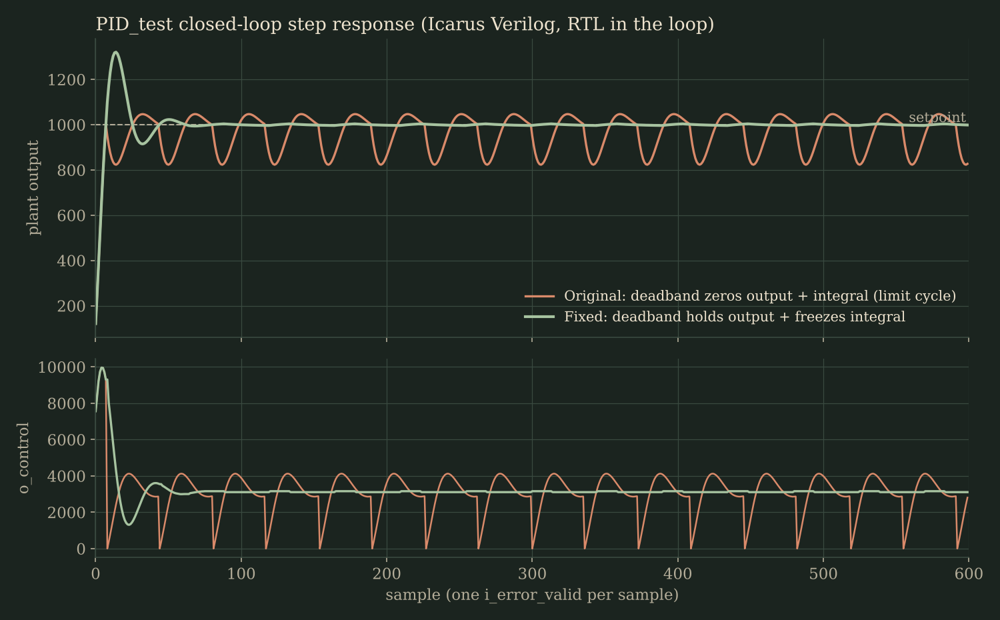

At a glance
- Vectors checked
- 6,980, all pass
- Planted bugs caught
- 3 of 3
- Settling (fixed)
- ±0.4% by sample 54
- Arithmetic
- Q8.8, 48-bit sum
Testing it
- Built a vector-driven, self-checking testbench and a test plan covering 20+ edge-case classes: deadband boundaries, full-scale ±32767 inputs and swings, saturation limits, integrator windup and release, ramps and random inputs.
- Wrote Python scripts that generate test vectors and a bit-exact reference model, so every output is compared automatically. All 6,980 vectors match.
- Checked the testbench itself by planting bugs: a logical instead of arithmetic shift, a 16-bit error delta, and removed saturation. It flagged all three, with 3,434, 48 and 2,879 mismatches.
The controller that never settled
Put the RTL in a closed loop with a plant model. With the original deadband logic the output never settles: zeroing the output and wiping the integrator each time the error reaches ±3 kicks the plant back out, causing a limit cycle that swings between about 82% and 105% of the setpoint.
Fixed it by holding the output and freezing the integrator inside the deadband. The loop now settles to within ±0.4%.
// DEADBAND: close enough, stop pushing
if (i_error >= -16'sd3 && i_error <= 16'sd3) begin
- o_control <= 0;
- integral_acc <= 0;
+ o_control <= o_control; // hold last output
+ integral_acc <= integral_acc; // freeze integrator
end
Next steps: reduce the 32% overshoot by lowering Ki or raising Kd, take the derivative of the measurement instead of the error to avoid derivative kick, and round instead of floor in the Q8.8 shift.